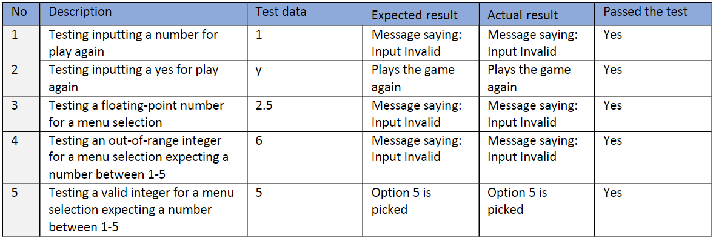

At each phase of the process, I did extensive testing of the parts of the program. Two of the these include the play again function and the user clean data function
The play again function is to see if the user wants to play again. It will take them back to the main menu if the input is “n” or “N” and it will replay the game type if the input is “y” or “Y”. This was simple to test for and was implemented easily.
The user clean data function is to validate all inputs other than the inputs into the function play again it will make sure they are integers and are between the values the intended in the program, if not it will keep asking until it gets a valid input.
The entries into the user clean data and replay function where:
